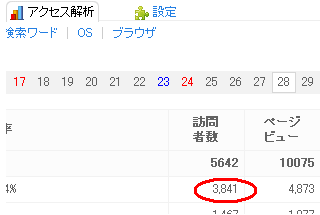

アクセスアップの方法
アクセスアップの方法はいくつかありますが、芸能関係のブログはアクセス数が増えやすい傾向にあります。
１記事で１万アクセスアップを目指す方法
アクセスアップの方法としてはニュースサイトへのトラックバックや瞬ワードを利用するもの、ブログランキングを利用するものなど様々ありますが、芸能ネタで検索エンジン経由のアクセスを集めるのもよいと思います。
芸能ネタや成人向けコンテンツは検索ボリュームが多いため、サイト収益には結びつかないものの、アクセス自体はかなり多い傾向にあります。
わたしはシーサーブログでいくつかブログを作っているのですが、そのうちのひとつにテレビドラマ関係のブログがあります。

たまにアクセスがありそうだなと思うものがあれば、そちらのブログに投稿しているのですが、時事性や流出系などが組み合わさる芸能ネタはアクセス数が急増する日もあります。
上のはひとつの記事へのアクセスが一日に3,000アクセスぐらいあったものですが、ほかのブログにも同じような記事を投稿していたので、それぞれのブログをあわせるとぺらぺらの記事でも一日１万アクセス以上になってました。
瞬間的にシーサーブログランキングで「8位」にランクインしましたが、ワンポイント的なアクセスアップの方法としては芸能関係が効率よいです。
上のブログはその後、複合キーワードで構成しなおしたりして、現在では一日に5,000～7,000ページビューぐらいで安定するようになっています。
ほかのレアなものでも、１日ではなく、１時間でユニーク800以上というのがありましたが、テレビと連動した場合は瞬間的にアクセス数が急増する傾向にあります。
このアクセスアップのポイントとしては、検索されそうなキーワードを記事タイトルに盛り込めるということに尽きます。
ニュースサイトやテレビで「何だろう？」という疑問を持った人はそのキーワードで検索をかけることが多いものです。
そのキーワードをタイトルに盛り込んでコンテンツを作成し、ソーシャルブックマークやほかのブログ、テクノクラティーなどを利用すると連鎖的にアクセスアップつながるはずです。
複合キーワードの上位表示でアクセスアップ
当サイトの「ブログの作り方」などのキーワードの検索回数はあっても数百ぐらいじゃないかなと思いますが、そういう場合は、複合キーワードでせめてみるとよいかもしれません。
アクセス数の多いキーワードで10個か20個程度でも上位表示されていたら、総合的にアクセス数を増やすことができるはずです。
トラックバックでニュースサイトからアクセスを集めるなどの方法もありますが、これらは関心が薄めになってしまうため、やはり検索エンジン経由のアクセスが一番効率よいと思います。
人によっては一日１万アクセスは簡単だという人もいますが、無料ブログで１万となると、検索エンジンのみならず、お気に入りで直接とか、ソーシャルブックマークとかメールマガジン、ブログランキングなどさまざまな入り口がないと正直、難しいと思います。
特にお気に入りでのリピート率が高くないといけないと思うので、つまりはぺらぺら記事じゃだめということになるのかもしれません。
また、上記のような単にアクセス数だけを集めるのは、楽しいことは楽しいのですが、正直なところ、サイト収益にはほとんどつながりません。非常に効率が悪いです。
芸能分野と金融分野でのページビュー単価で考えると、おそらくは数千倍程度の差があるはずですので、単にアクセス数だけを集めてもまったくもって意味がないです。
なので、単にユニークアクセス数を集めるよりも、収益の発生しやすい分野でページビューや閲覧時間を気にしながら作成した方が、結局は一番いいアクセスアップの方法になるのではないかなと思います。